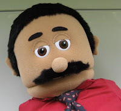

An idea overdue?
5/14/2010
From David Nickell
I haven't seriously begun ventriloquism yet. I'm still in the learning stage. But I recently purchased a second figure -- a soft puppet by SillyPuppets named Carlos (see photo) -- that I thought would be easier for practice than the wooden figure I bought. "Carlos" has the wonderful feature of removable legs, ma
The other day I took him to my dentist's office to show to the hygienist who had expressed an interest in my progress with ventriloquism. She was delighted. She told me something truly amazing about her youth in Camaguey, Cuba. When she was maybe six years old, her mother enrolled her in the local arts school, hoping she could learn ballet. She was deemed too small for that, however, and ended up in music and art classes. But her description of the school is like nothing I ever heard before. Not only do they offer training in the traditional arts of music, dance, theater and art, but they also have instruction in ventriloquism and magic! Once a week, the students from the various disciplines would put on a show to entertain their classmates, thereby combining their learning with real-life experience.
That sounded like a great idea that is long overdue for this country to adopt. I mean if you think about it, look at all the out-of-work actors, singers, dancers and artists who graduate every year from top-rated arts schools. And then compare that to the number of working magicians and ventriloquists.
I don't know how you bring about such a change in the concept of U.S.arts schools, particularly in this economy, but it certainly seems worth considering.
I haven't seriously begun ventriloquism yet. I'm still in the learning stage. But I recently purchased a second figure -- a soft puppet by SillyPuppets named Carlos (see photo) -- that I thought would be easier for practice than the wooden figure I bought. "Carlos" has the wonderful feature of removable legs, ma
{kind=link}

king it easy to manipulate and hold while reading the lessons and recommended practice in the Maher Course.The other day I took him to my dentist's office to show to the hygienist who had expressed an interest in my progress with ventriloquism. She was delighted. She told me something truly amazing about her youth in Camaguey, Cuba. When she was maybe six years old, her mother enrolled her in the local arts school, hoping she could learn ballet. She was deemed too small for that, however, and ended up in music and art classes. But her description of the school is like nothing I ever heard before. Not only do they offer training in the traditional arts of music, dance, theater and art, but they also have instruction in ventriloquism and magic! Once a week, the students from the various disciplines would put on a show to entertain their classmates, thereby combining their learning with real-life experience.
That sounded like a great idea that is long overdue for this country to adopt. I mean if you think about it, look at all the out-of-work actors, singers, dancers and artists who graduate every year from top-rated arts schools. And then compare that to the number of working magicians and ventriloquists.
I don't know how you bring about such a change in the concept of U.S.arts schools, particularly in this economy, but it certainly seems worth considering.